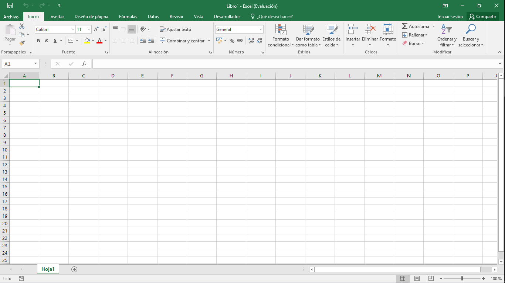

Excel es una hoja de cálculo que nos permite manipular datos numéricos y de texto en tablas formadas por la unión de filas y columnas. Pero...
¿Qué es una hoja de calculo?
Una hoja de cálculo es lo que utilizaban los contadores para llevar registros, esto se utilizaba mucho antes de que aparecieran las computadoras. Las hojas de cálculo en programas informáticos aparecieron desde la década de 1960 y fueron desarrolladas para simular las hojas de trabajo contables,
que se utilizaba en ese entonces y de esa manera automatizaban el trabajo contable.

Historia de Excel
Excel fue lanzado en 1985 como una herramienta de hoja de cálculo para el sistema operativo Macintosh de Apple. La versión inicial de Excel era muy básica, pero a medida que fue ganando popularidad, Microsoft comenzó a invertir en su desarrollo y mejorar sus capacidades.
En 1987, Microsoft lanzó la primera versión de Excel para PC, y pronto se convirtió en una herramienta popular entre los usuarios de Windows. La versión de Excel para Windows ofrecía una mayor funcionalidad y una interfaz más fácil de usar, lo que la hizo aún más atractiva para los usuarios empresariales.
En 1993, Microsoft lanzó Excel 5.0, que incluía una gran cantidad de nuevas funciones y características avanzadas de análisis de datos, incluyendo tablas dinámicas, gráficos y funciones estadísticas. Estas nuevas características impulsaron aún más la popularidad de Excel entre los usuarios empresariales y financieros.
En 1995, Microsoft lanzó Excel 7.0 como parte de la suite de aplicaciones de Microsoft Office. Esta versión incluía nuevas características como la capacidad de vincular hojas de cálculo y tablas dinámicas, lo que permitía una mayor integración entre diferentes tipos de datos y una mayor capacidad de análisis.
A medida que Microsoft Office se convirtió en una herramienta esencial en el mundo empresarial, Excel se convirtió en una herramienta vital para la gestión y análisis de datos. Las nuevas versiones de Excel continuaron mejorando la funcionalidad y la facilidad de uso, incluyendo características como la colaboración en línea y la compatibilidad con dispositivos móviles.
Hoy en día, Excel es una herramienta esencial para una amplia gama de industrias, desde finanzas y contabilidad hasta marketing y análisis de datos. La capacidad de gestionar grandes cantidades de datos, crear gráficos y tablas dinámicas, y realizar análisis avanzados es crucial para el éxito empresarial.
En resumen, la historia de Excel es una historia de innovación y mejora continua. Desde su lanzamiento inicial en 1985 hasta su lugar en la cima del mundo empresarial en la actualidad, Excel ha evolucionado constantemente para satisfacer las necesidades cambiantes de los usuarios empresariales y financieros. Su capacidad para ayudar a los usuarios a gestionar y analizar grandes cantidades de datos ha hecho de Excel una herramienta vital en la toma de decisiones empresariales.
Si deseas saber mas de Excel, te dejamos el siguiente enlace: